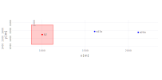
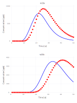
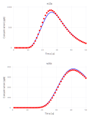
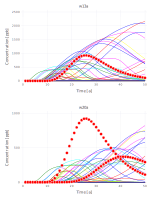
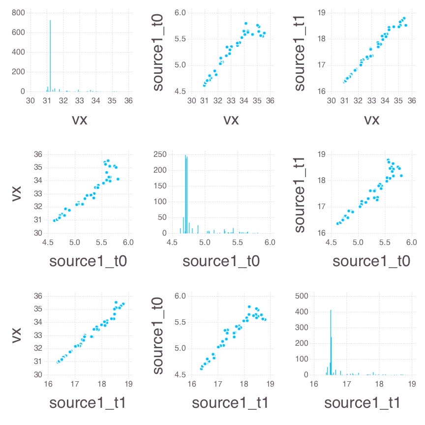
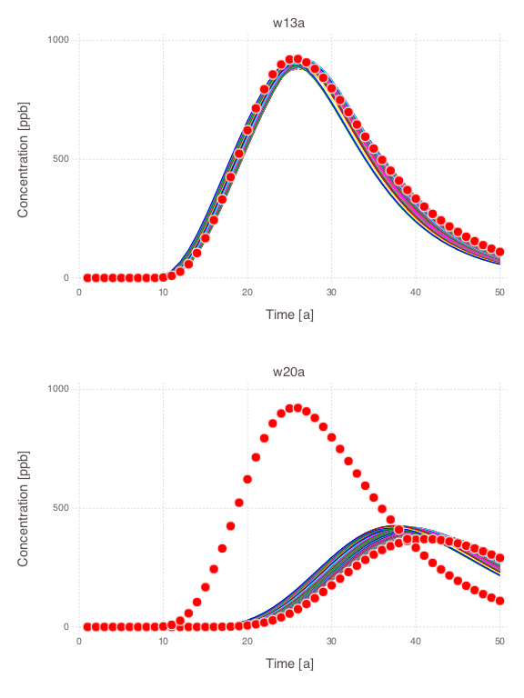

Contaminant Transport
Analysis of contaminant transport in an aquifer
All the figures below are generated using examples/contamination/contamination.jl.
Model setup

There are 20 monitoring wells.
Each well has 2 measurement ports: shallow (3 m below the water table labeled a) and deep (33 m below the water table labeled b).
Contaminant concentrations are observed for 50 years at each well.
The contaminant transport is solved using the Anasol package in Mads.
Unknown model parameters
- Start time of contaminant release
- End time of contaminant release
- Advective pore velocity
Reduced model setup
Analysis of the data from only 2 monitoring locations: w13a and w20a.

Example model solution

Model parameter values:
Model calibration
A calibration match between observations and model predictions obtained by model inversion:

Prior parameter uncertainties
Probabilistic distributions of the prior parameter uncertainties are:
- = Uniform(0, 10)
- = Uniform(5, 40)
- = LogUniform(0.1, 200)
Spaghetti plots representing the prior uncertainties:

The observation data are plotted as red dots.
Bayesian sensitivity analysis
Histograms and scatter plots of Bayesian MCMC results:

Posterior parameter uncertainties
Spaghetti plots representing the posterior uncertainties:

Note that the parameter uncertainties are constrained by the observation data. The observation data are plotted as red dots.